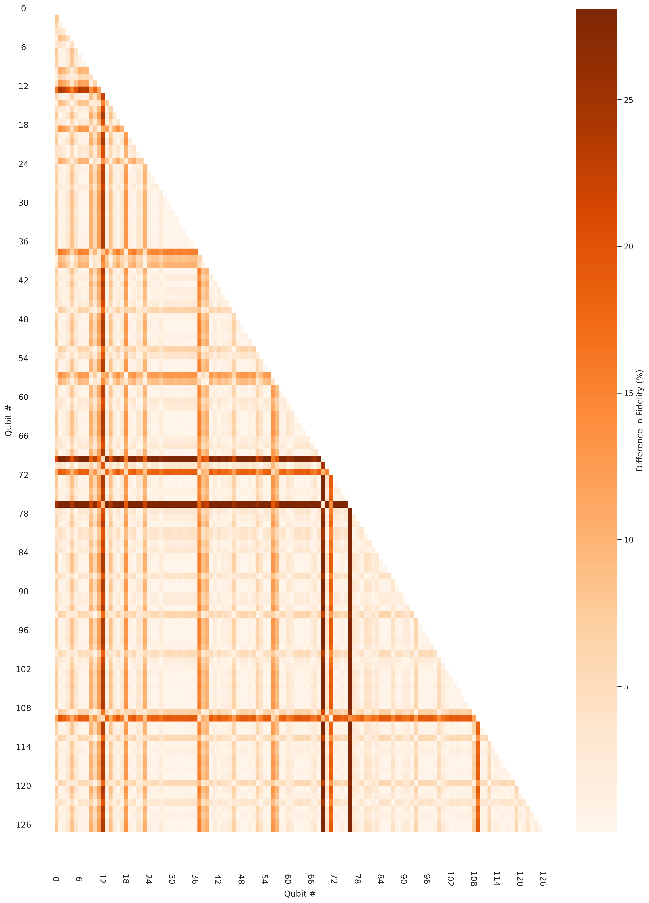
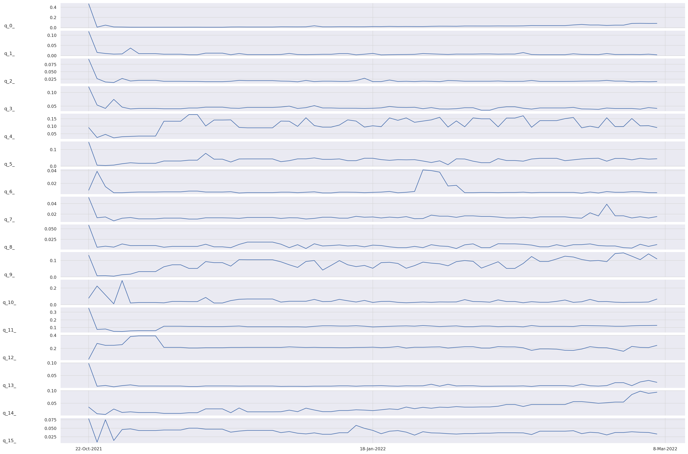
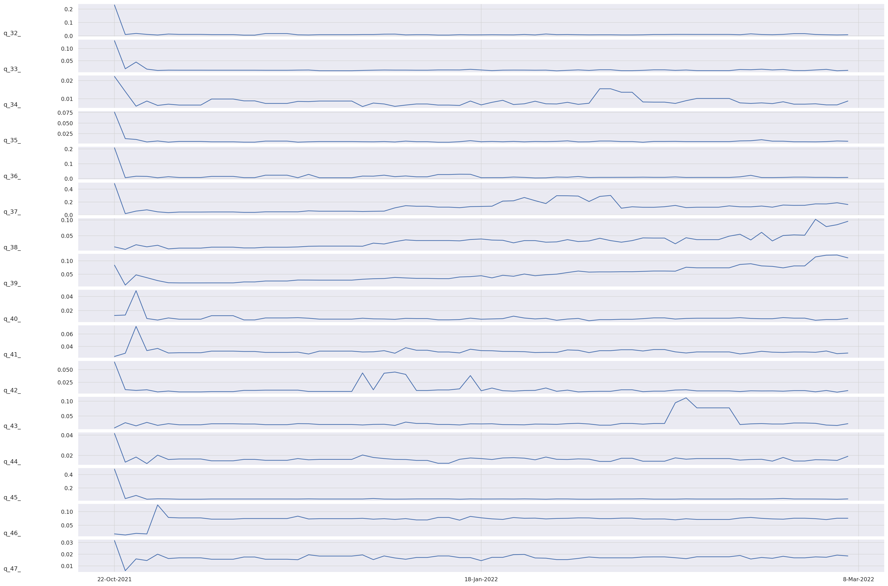
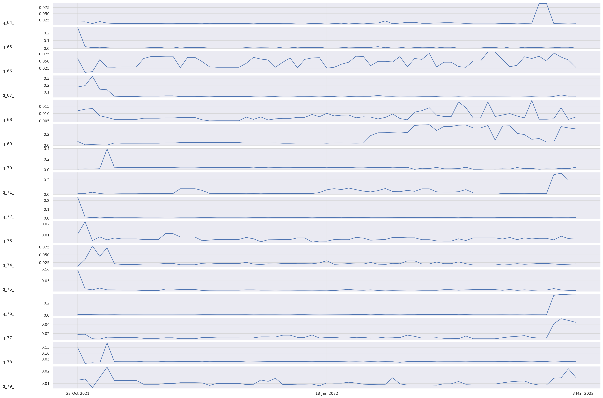
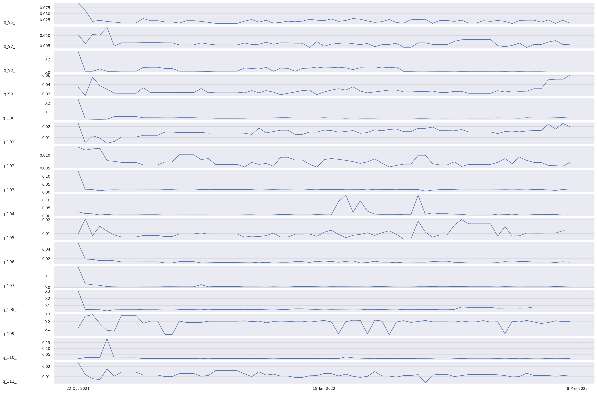
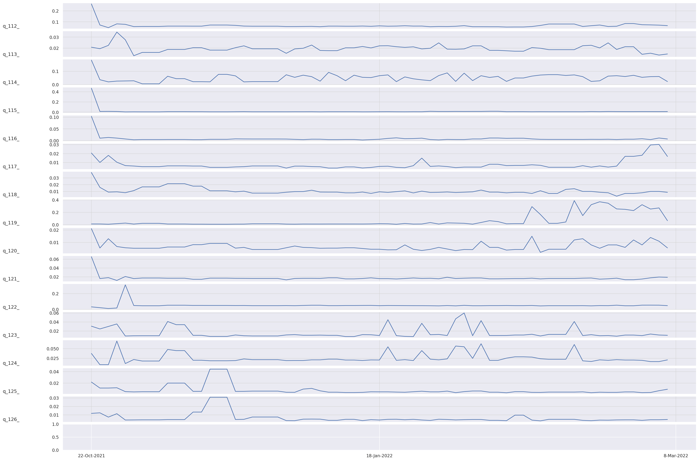

Next:
Metric 2: Gate fidelity
Up:
washington
Previous:
washington
Metric 1: Initialization fidelity
METRIC 1: INITIALIZATION FIDELITY
Confidence interval (across time)
Confidence interval (point-in-time)
RAW DATA: POINT-IN-TIME

RAW DATA: ACROSS TIME
Qubits # 0-15
Qubits # 16-31

Qubits # 32-47
Qubits # 48-63

Qubits # 64-79
Qubits # 80-95

Qubits # 96-111
Qubits # 112-126


Next:
Metric 2: Gate fidelity
Up:
washington
Previous:
washington